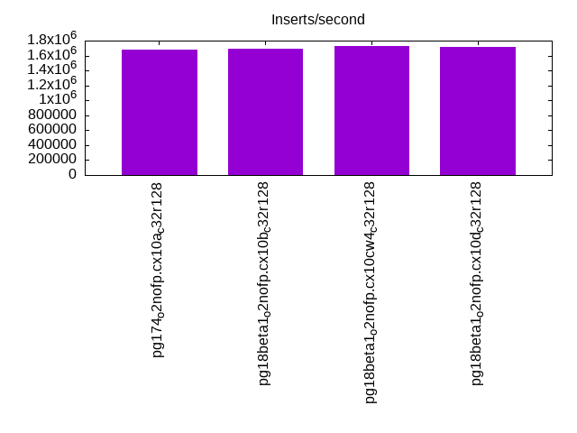

This is a report for the insert benchmark with 200M docs and 20 client(s). It is generated by scripts (bash, awk, sed) and Tufte might not be impressed. An overview of the insert benchmark is here and a short update is here. Below, by DBMS, I mean DBMS+version.config. An example is my8020.c10b40 where my means MySQL, 8020 is version 8.0.20 and c10b40 is the name for the configuration file.
The test server has 48 AMD cores, 128G RAM and RAID 10 with 2 NVMe devices. It is described here. The benchmark was run with 20 clients and there were 1 or 3 connections per client (1 for queries or inserts without rate limits, 1+1 for rate limited inserts+deletes). It uses 20 tables with a table per client. It loads 10M rows per table without secondary indexes, creates 3 secondary indexes per table, then inserts 16m+4m rows per table with a delete per insert to avoid growing the table. It then does 6 read+write tests for 1800s each that do queries as fast as possible with 100,100,500,500,1000,1000 inserts/s and the same for deletes/s per client concurrent with the queries. The database is cached by Postgres. Clients and the DBMS share one server. The per-database configs are in the per-database subdirectories here.
The tested DBMS are:
The numbers are inserts/s for l.i0, l.i1 and l.i2, indexed docs (or rows) /s for l.x and queries/s for qr100, qp100 thru qr1000, qp1000" The values are the average rate over the entire test for inserts (IPS) and queries (QPS). The range of values for IPS and QPS is split into 3 parts: bottom 25%, middle 50%, top 25%. Values in the bottom 25% have a red background, values in the top 25% have a green background and values in the middle have no color. A gray background is used for values that can be ignored because the DBMS did not sustain the target insert rate. Red backgrounds are not used when the minimum value is within 80% of the max value.
| dbms | l.i0 | l.x | l.i1 | l.i2 | qr100 | qp100 | qr500 | qp500 | qr1000 | qp1000 |
|---|---|---|---|---|---|---|---|---|---|---|
| pg174_o2nofp.cx10a_c32r128 | 1680672 | 2777779 | 390720 | 103896 | 390336 | 194871 | 375502 | 193163 | 371113 | 191529 |
| pg18beta1_o2nofp.cx10b_c32r128 | 1694915 | 2739727 | 397516 | 103761 | 389206 | 193978 | 375689 | 192471 | 372868 | 190806 |
| pg18beta1_o2nofp.cx10cw4_c32r128 | 1724138 | 2702704 | 405577 | 108108 | 384972 | 195740 | 374394 | 194024 | 368807 | 192294 |
| pg18beta1_o2nofp.cx10d_c32r128 | 1709402 | 2702704 | 403023 | 104439 | 394180 | 198592 | 380308 | 196382 | 376557 | 194336 |
This table has relative throughput, throughput for the DBMS relative to the DBMS in the first line, using the absolute throughput from the previous table. Values less than 0.95 have a yellow background. Values greater than 1.05 have a blue background.
| dbms | l.i0 | l.x | l.i1 | l.i2 | qr100 | qp100 | qr500 | qp500 | qr1000 | qp1000 |
|---|---|---|---|---|---|---|---|---|---|---|
| pg174_o2nofp.cx10a_c32r128 | 1.00 | 1.00 | 1.00 | 1.00 | 1.00 | 1.00 | 1.00 | 1.00 | 1.00 | 1.00 |
| pg18beta1_o2nofp.cx10b_c32r128 | 1.01 | 0.99 | 1.02 | 1.00 | 1.00 | 1.00 | 1.00 | 1.00 | 1.00 | 1.00 |
| pg18beta1_o2nofp.cx10cw4_c32r128 | 1.03 | 0.97 | 1.04 | 1.04 | 0.99 | 1.00 | 1.00 | 1.00 | 0.99 | 1.00 |
| pg18beta1_o2nofp.cx10d_c32r128 | 1.02 | 0.97 | 1.03 | 1.01 | 1.01 | 1.02 | 1.01 | 1.02 | 1.01 | 1.01 |
This lists the average rate of inserts/s for the tests that do inserts concurrent with queries. For such tests the query rate is listed in the table above. The read+write tests are setup so that the insert rate should match the target rate every second. Cells that are not at least 95% of the target have a red background to indicate a failure to satisfy the target.
| dbms | qr100.L1 | qp100.L2 | qr500.L3 | qp500.L4 | qr1000.L5 | qp1000.L6 |
|---|---|---|---|---|---|---|
| pg174_o2nofp.cx10a_c32r128 | 1977 | 1977 | 9885 | 9885 | 19758 | 19758 |
| pg18beta1_o2nofp.cx10b_c32r128 | 1978 | 1976 | 9885 | 9885 | 19758 | 19758 |
| pg18beta1_o2nofp.cx10cw4_c32r128 | 1977 | 1977 | 9885 | 9879 | 19758 | 19758 |
| pg18beta1_o2nofp.cx10d_c32r128 | 1977 | 1976 | 9885 | 9885 | 19758 | 19748 |
| target | 2000 | 2000 | 10000 | 10000 | 20000 | 20000 |
l.i0: load without secondary indexes. Graphs for performance per 1-second interval are here.
Average throughput:
Insert response time histogram: each cell has the percentage of responses that take <= the time in the header and max is the max response time in seconds. For the max column values in the top 25% of the range have a red background and in the bottom 25% of the range have a green background. The red background is not used when the min value is within 80% of the max value.
| dbms | 256us | 1ms | 4ms | 16ms | 64ms | 256ms | 1s | 4s | 16s | gt | max |
|---|---|---|---|---|---|---|---|---|---|---|---|
| pg174_o2nofp.cx10a_c32r128 | 91.932 | 8.008 | 0.036 | 0.006 | 0.011 | 0.007 | 0.385 | ||||
| pg18beta1_o2nofp.cx10b_c32r128 | 94.122 | 5.814 | 0.038 | 0.015 | 0.006 | 0.006 | 0.659 | ||||
| pg18beta1_o2nofp.cx10cw4_c32r128 | 94.505 | 5.424 | 0.038 | 0.018 | 0.009 | 0.006 | 0.664 | ||||
| pg18beta1_o2nofp.cx10d_c32r128 | 94.426 | 5.518 | 0.031 | 0.009 | 0.010 | 0.006 | 0.778 |
Performance metrics for the DBMS listed above. Some are normalized by throughput, others are not. Legend for results is here.
ips qps rps rmbps wps wmbps rpq rkbpq wpi wkbpi csps cpups cspq cpupq dbgb1 dbgb2 rss maxop p50 p99 tag 1680672 0 3 0.0 6619.0 701.8 0.000 0.000 0.004 0.428 277493 44.4 0.165 13 19.1 51.7 12.8 0.385 110581 33864 pg174_o2nofp.cx10a_c32r128 1694915 0 3 0.0 6881.1 724.6 0.000 0.000 0.004 0.438 256212 45.9 0.151 13 19.1 51.7 1.4 0.659 113536 54542 pg18beta1_o2nofp.cx10b_c32r128 1724138 0 3 0.0 6869.8 724.2 0.000 0.000 0.004 0.430 251935 45.6 0.146 13 19.1 51.7 7.8 0.664 115076 31546 pg18beta1_o2nofp.cx10cw4_c32r128 1709402 0 3 0.0 6878.6 722.2 0.000 0.000 0.004 0.433 253094 45.5 0.148 13 19.1 51.7 8.0 0.778 115111 42853 pg18beta1_o2nofp.cx10d_c32r128
l.x: create secondary indexes.
Average throughput:
Performance metrics for the DBMS listed above. Some are normalized by throughput, others are not. Legend for results is here.
ips qps rps rmbps wps wmbps rpq rkbpq wpi wkbpi csps cpups cspq cpupq dbgb1 dbgb2 rss maxop p50 p99 tag 2777779 0 4 0.0 7177.8 833.9 0.000 0.000 0.003 0.307 43819 15.8 0.016 3 38.4 88.5 7.1 0.027 NA NA pg174_o2nofp.cx10a_c32r128 2739727 0 4 0.0 6901.1 802.3 0.000 0.000 0.003 0.300 34138 14.9 0.012 3 38.4 88.5 7.1 0.035 NA NA pg18beta1_o2nofp.cx10b_c32r128 2702704 0 4 0.0 6851.4 795.7 0.000 0.000 0.003 0.301 35396 15.1 0.013 3 38.4 88.5 6.4 0.025 NA NA pg18beta1_o2nofp.cx10cw4_c32r128 2702704 0 4 0.0 6861.0 797.8 0.000 0.000 0.003 0.302 34312 15.1 0.013 3 38.4 88.5 7.1 0.045 NA NA pg18beta1_o2nofp.cx10d_c32r128
l.i1: continue load after secondary indexes created with 50 inserts per transaction. Graphs for performance per 1-second interval are here.
Average throughput:
Insert response time histogram: each cell has the percentage of responses that take <= the time in the header and max is the max response time in seconds. For the max column values in the top 25% of the range have a red background and in the bottom 25% of the range have a green background. The red background is not used when the min value is within 80% of the max value.
| dbms | 256us | 1ms | 4ms | 16ms | 64ms | 256ms | 1s | 4s | 16s | gt | max |
|---|---|---|---|---|---|---|---|---|---|---|---|
| pg174_o2nofp.cx10a_c32r128 | 2.820 | 89.477 | 7.147 | 0.549 | 0.006 | nonzero | 0.844 | ||||
| pg18beta1_o2nofp.cx10b_c32r128 | 3.119 | 90.127 | 6.119 | 0.630 | 0.005 | 0.001 | 0.407 | ||||
| pg18beta1_o2nofp.cx10cw4_c32r128 | 1.975 | 90.952 | 6.432 | 0.636 | 0.005 | 0.001 | 0.681 | ||||
| pg18beta1_o2nofp.cx10d_c32r128 | 2.245 | 90.721 | 6.386 | 0.642 | 0.006 | 0.001 | 0.916 |
Delete response time histogram: each cell has the percentage of responses that take <= the time in the header and max is the max response time in seconds. For the max column values in the top 25% of the range have a red background and in the bottom 25% of the range have a green background. The red background is not used when the min value is within 80% of the max value.
| dbms | 256us | 1ms | 4ms | 16ms | 64ms | 256ms | 1s | 4s | 16s | gt | max |
|---|---|---|---|---|---|---|---|---|---|---|---|
| pg174_o2nofp.cx10a_c32r128 | 22.106 | 74.754 | 2.882 | 0.254 | 0.004 | nonzero | 0.844 | ||||
| pg18beta1_o2nofp.cx10b_c32r128 | 21.232 | 75.732 | 2.696 | 0.336 | 0.004 | nonzero | 0.392 | ||||
| pg18beta1_o2nofp.cx10cw4_c32r128 | 22.036 | 75.123 | 2.493 | 0.345 | 0.003 | 0.001 | 0.680 | ||||
| pg18beta1_o2nofp.cx10d_c32r128 | 21.859 | 75.230 | 2.554 | 0.352 | 0.004 | nonzero | 0.886 |
Performance metrics for the DBMS listed above. Some are normalized by throughput, others are not. Legend for results is here.
ips qps rps rmbps wps wmbps rpq rkbpq wpi wkbpi csps cpups cspq cpupq dbgb1 dbgb2 rss maxop p50 p99 tag 390720 0 599 2.7 6383.1 607.7 0.002 0.007 0.016 1.593 254003 52.4 0.650 64 56.2 152.2 39.3 0.844 22676 3347 pg174_o2nofp.cx10a_c32r128 397516 0 104 0.8 6508.5 618.7 0.000 0.002 0.016 1.594 241744 53.5 0.608 65 56.3 152.4 33.6 0.407 23125 3346 pg18beta1_o2nofp.cx10b_c32r128 405577 0 88 0.5 6651.7 631.3 0.000 0.001 0.016 1.594 250240 53.6 0.617 63 56.0 152.0 43.2 0.681 23237 3596 pg18beta1_o2nofp.cx10cw4_c32r128 403023 0 116 0.9 6611.3 630.4 0.000 0.002 0.016 1.602 247532 53.6 0.614 64 56.0 152.1 25.6 0.916 23175 3346 pg18beta1_o2nofp.cx10d_c32r128
l.i2: continue load after secondary indexes created with 5 inserts per transaction. Graphs for performance per 1-second interval are here.
Average throughput:
Insert response time histogram: each cell has the percentage of responses that take <= the time in the header and max is the max response time in seconds. For the max column values in the top 25% of the range have a red background and in the bottom 25% of the range have a green background. The red background is not used when the min value is within 80% of the max value.
| dbms | 256us | 1ms | 4ms | 16ms | 64ms | 256ms | 1s | 4s | 16s | gt | max |
|---|---|---|---|---|---|---|---|---|---|---|---|
| pg174_o2nofp.cx10a_c32r128 | 91.364 | 8.333 | 0.291 | 0.013 | nonzero | nonzero | 0.071 | ||||
| pg18beta1_o2nofp.cx10b_c32r128 | 91.006 | 8.700 | 0.270 | 0.024 | nonzero | 0.061 | |||||
| pg18beta1_o2nofp.cx10cw4_c32r128 | 90.285 | 9.384 | 0.302 | 0.028 | nonzero | nonzero | 0.083 | ||||
| pg18beta1_o2nofp.cx10d_c32r128 | 91.354 | 8.365 | 0.269 | 0.012 | nonzero | 0.024 |
Delete response time histogram: each cell has the percentage of responses that take <= the time in the header and max is the max response time in seconds. For the max column values in the top 25% of the range have a red background and in the bottom 25% of the range have a green background. The red background is not used when the min value is within 80% of the max value.
| dbms | 256us | 1ms | 4ms | 16ms | 64ms | 256ms | 1s | 4s | 16s | gt | max |
|---|---|---|---|---|---|---|---|---|---|---|---|
| pg174_o2nofp.cx10a_c32r128 | 3.432 | 56.307 | 40.217 | 0.044 | nonzero | nonzero | 0.071 | ||||
| pg18beta1_o2nofp.cx10b_c32r128 | 2.743 | 62.254 | 34.942 | 0.061 | 0.001 | 0.061 | |||||
| pg18beta1_o2nofp.cx10cw4_c32r128 | 2.684 | 62.080 | 35.169 | 0.066 | 0.001 | nonzero | 0.083 | ||||
| pg18beta1_o2nofp.cx10d_c32r128 | 2.748 | 60.867 | 36.342 | 0.043 | nonzero | 0.026 |
Performance metrics for the DBMS listed above. Some are normalized by throughput, others are not. Legend for results is here.
ips qps rps rmbps wps wmbps rpq rkbpq wpi wkbpi csps cpups cspq cpupq dbgb1 dbgb2 rss maxop p50 p99 tag 103896 0 1 0.0 1599.5 153.2 0.000 0.000 0.015 1.510 396232 53.2 3.814 246 56.4 152.5 16.0 0.071 4985 3626 pg174_o2nofp.cx10a_c32r128 103761 0 2 0.0 1593.2 152.6 0.000 0.000 0.015 1.506 393921 53.0 3.796 245 56.5 152.6 35.8 0.061 4760 2322 pg18beta1_o2nofp.cx10b_c32r128 108108 0 1 0.0 1625.9 155.6 0.000 0.000 0.015 1.474 407335 54.7 3.768 243 56.0 152.1 5.9 0.083 4365 2487 pg18beta1_o2nofp.cx10cw4_c32r128 104439 0 1 0.0 1556.5 149.3 0.000 0.000 0.015 1.464 397208 53.3 3.803 245 56.3 152.4 2.5 0.024 4605 2762 pg18beta1_o2nofp.cx10d_c32r128
qr100.L1: range queries with 100 insert/s per client. Graphs for performance per 1-second interval are here.
Average throughput:
Query response time histogram: each cell has the percentage of responses that take <= the time in the header and max is the max response time in seconds. For max values in the top 25% of the range have a red background and in the bottom 25% of the range have a green background. The red background is not used when the min value is within 80% of the max value.
| dbms | 256us | 1ms | 4ms | 16ms | 64ms | 256ms | 1s | 4s | 16s | gt | max |
|---|---|---|---|---|---|---|---|---|---|---|---|
| pg174_o2nofp.cx10a_c32r128 | 99.997 | 0.002 | 0.002 | nonzero | 0.008 | ||||||
| pg18beta1_o2nofp.cx10b_c32r128 | 99.997 | 0.002 | 0.001 | nonzero | nonzero | 0.016 | |||||
| pg18beta1_o2nofp.cx10cw4_c32r128 | 99.997 | 0.002 | 0.001 | nonzero | nonzero | 0.024 | |||||
| pg18beta1_o2nofp.cx10d_c32r128 | 99.997 | 0.002 | 0.001 | nonzero | 0.008 |
Insert response time histogram: each cell has the percentage of responses that take <= the time in the header and max is the max response time in seconds. For max values in the top 25% of the range have a red background and in the bottom 25% of the range have a green background. The red background is not used when the min value is within 80% of the max value.
| dbms | 256us | 1ms | 4ms | 16ms | 64ms | 256ms | 1s | 4s | 16s | gt | max |
|---|---|---|---|---|---|---|---|---|---|---|---|
| pg174_o2nofp.cx10a_c32r128 | 0.006 | 99.689 | 0.306 | 0.009 | |||||||
| pg18beta1_o2nofp.cx10b_c32r128 | 0.006 | 99.686 | 0.308 | 0.014 | |||||||
| pg18beta1_o2nofp.cx10cw4_c32r128 | 0.014 | 99.707 | 0.279 | 0.010 | |||||||
| pg18beta1_o2nofp.cx10d_c32r128 | 0.004 | 99.694 | 0.301 | 0.011 |
Delete response time histogram: each cell has the percentage of responses that take <= the time in the header and max is the max response time in seconds. For max values in the top 25% of the range have a red background and in the bottom 25% of the range have a green background. The red background is not used when the min value is within 80% of the max value.
| dbms | 256us | 1ms | 4ms | 16ms | 64ms | 256ms | 1s | 4s | 16s | gt | max |
|---|---|---|---|---|---|---|---|---|---|---|---|
| pg174_o2nofp.cx10a_c32r128 | 66.753 | 33.229 | 0.018 | 0.009 | |||||||
| pg18beta1_o2nofp.cx10b_c32r128 | 66.628 | 33.357 | 0.015 | 0.008 | |||||||
| pg18beta1_o2nofp.cx10cw4_c32r128 | 67.350 | 32.628 | 0.022 | 0.010 | |||||||
| pg18beta1_o2nofp.cx10d_c32r128 | 65.475 | 34.489 | 0.036 | 0.007 |
Performance metrics for the DBMS listed above. Some are normalized by throughput, others are not. Legend for results is here.
ips qps rps rmbps wps wmbps rpq rkbpq wpi wkbpi csps cpups cspq cpupq dbgb1 dbgb2 rss maxop p50 p99 tag 1977 390336 0 0.0 121.3 10.4 0.000 0.000 0.061 5.410 1483684 42.6 3.801 52 56.4 152.5 0.5 0.008 19930 18060 pg174_o2nofp.cx10a_c32r128 1978 389206 0 0.0 122.2 10.4 0.000 0.000 0.062 5.394 1478663 42.5 3.799 52 56.5 152.6 0.4 0.016 19850 17971 pg18beta1_o2nofp.cx10b_c32r128 1977 384972 0 0.0 121.6 10.4 0.000 0.000 0.062 5.410 1463328 42.6 3.801 53 56.0 152.0 0.5 0.024 19426 17725 pg18beta1_o2nofp.cx10cw4_c32r128 1977 394180 0 0.0 123.1 10.4 0.000 0.000 0.062 5.409 1498386 42.6 3.801 52 56.3 152.3 0.5 0.008 19819 18316 pg18beta1_o2nofp.cx10d_c32r128
qp100.L2: point queries with 100 insert/s per client. Graphs for performance per 1-second interval are here.
Average throughput:
Query response time histogram: each cell has the percentage of responses that take <= the time in the header and max is the max response time in seconds. For max values in the top 25% of the range have a red background and in the bottom 25% of the range have a green background. The red background is not used when the min value is within 80% of the max value.
| dbms | 256us | 1ms | 4ms | 16ms | 64ms | 256ms | 1s | 4s | 16s | gt | max |
|---|---|---|---|---|---|---|---|---|---|---|---|
| pg174_o2nofp.cx10a_c32r128 | 99.986 | 0.011 | 0.003 | nonzero | 0.006 | ||||||
| pg18beta1_o2nofp.cx10b_c32r128 | 99.984 | 0.012 | 0.003 | nonzero | 0.008 | ||||||
| pg18beta1_o2nofp.cx10cw4_c32r128 | 99.986 | 0.011 | 0.003 | nonzero | 0.006 | ||||||
| pg18beta1_o2nofp.cx10d_c32r128 | 99.986 | 0.011 | 0.003 | nonzero | 0.012 |
Insert response time histogram: each cell has the percentage of responses that take <= the time in the header and max is the max response time in seconds. For max values in the top 25% of the range have a red background and in the bottom 25% of the range have a green background. The red background is not used when the min value is within 80% of the max value.
| dbms | 256us | 1ms | 4ms | 16ms | 64ms | 256ms | 1s | 4s | 16s | gt | max |
|---|---|---|---|---|---|---|---|---|---|---|---|
| pg174_o2nofp.cx10a_c32r128 | 99.596 | 0.404 | 0.010 | ||||||||
| pg18beta1_o2nofp.cx10b_c32r128 | 99.679 | 0.321 | 0.012 | ||||||||
| pg18beta1_o2nofp.cx10cw4_c32r128 | 99.722 | 0.278 | 0.009 | ||||||||
| pg18beta1_o2nofp.cx10d_c32r128 | 99.631 | 0.369 | 0.011 |
Delete response time histogram: each cell has the percentage of responses that take <= the time in the header and max is the max response time in seconds. For max values in the top 25% of the range have a red background and in the bottom 25% of the range have a green background. The red background is not used when the min value is within 80% of the max value.
| dbms | 256us | 1ms | 4ms | 16ms | 64ms | 256ms | 1s | 4s | 16s | gt | max |
|---|---|---|---|---|---|---|---|---|---|---|---|
| pg174_o2nofp.cx10a_c32r128 | 22.396 | 77.486 | 0.118 | 0.012 | |||||||
| pg18beta1_o2nofp.cx10b_c32r128 | 19.028 | 80.861 | 0.111 | 0.010 | |||||||
| pg18beta1_o2nofp.cx10cw4_c32r128 | 22.254 | 77.649 | 0.097 | 0.010 | |||||||
| pg18beta1_o2nofp.cx10d_c32r128 | 22.185 | 77.719 | 0.096 | 0.010 |
Performance metrics for the DBMS listed above. Some are normalized by throughput, others are not. Legend for results is here.
ips qps rps rmbps wps wmbps rpq rkbpq wpi wkbpi csps cpups cspq cpupq dbgb1 dbgb2 rss maxop p50 p99 tag 1977 194871 0 0.0 338.6 17.8 0.000 0.000 0.171 9.233 749889 41.5 3.848 102 56.4 149.3 0.5 0.006 9973 9430 pg174_o2nofp.cx10a_c32r128 1976 193978 0 0.0 341.7 17.9 0.000 0.000 0.173 9.264 746610 41.5 3.849 103 56.5 149.4 0.5 0.008 9925 9334 pg18beta1_o2nofp.cx10b_c32r128 1977 195740 0 0.0 340.6 17.8 0.000 0.000 0.172 9.223 753316 41.3 3.849 101 56.0 148.9 0.5 0.006 10012 9462 pg18beta1_o2nofp.cx10cw4_c32r128 1976 198592 0 0.0 340.7 17.8 0.000 0.000 0.172 9.251 764650 41.5 3.850 100 56.3 149.2 0.5 0.012 10197 9558 pg18beta1_o2nofp.cx10d_c32r128
qr500.L3: range queries with 500 insert/s per client. Graphs for performance per 1-second interval are here.
Average throughput:
Query response time histogram: each cell has the percentage of responses that take <= the time in the header and max is the max response time in seconds. For max values in the top 25% of the range have a red background and in the bottom 25% of the range have a green background. The red background is not used when the min value is within 80% of the max value.
| dbms | 256us | 1ms | 4ms | 16ms | 64ms | 256ms | 1s | 4s | 16s | gt | max |
|---|---|---|---|---|---|---|---|---|---|---|---|
| pg174_o2nofp.cx10a_c32r128 | 99.987 | 0.006 | 0.007 | nonzero | nonzero | nonzero | 0.078 | ||||
| pg18beta1_o2nofp.cx10b_c32r128 | 99.987 | 0.006 | 0.007 | nonzero | nonzero | nonzero | 0.082 | ||||
| pg18beta1_o2nofp.cx10cw4_c32r128 | 99.987 | 0.006 | 0.007 | nonzero | nonzero | nonzero | 0.072 | ||||
| pg18beta1_o2nofp.cx10d_c32r128 | 99.987 | 0.006 | 0.007 | nonzero | nonzero | 0.018 |
Insert response time histogram: each cell has the percentage of responses that take <= the time in the header and max is the max response time in seconds. For max values in the top 25% of the range have a red background and in the bottom 25% of the range have a green background. The red background is not used when the min value is within 80% of the max value.
| dbms | 256us | 1ms | 4ms | 16ms | 64ms | 256ms | 1s | 4s | 16s | gt | max |
|---|---|---|---|---|---|---|---|---|---|---|---|
| pg174_o2nofp.cx10a_c32r128 | 8.078 | 91.113 | 0.778 | 0.031 | 0.038 | ||||||
| pg18beta1_o2nofp.cx10b_c32r128 | 9.953 | 89.061 | 0.937 | 0.049 | 0.045 | ||||||
| pg18beta1_o2nofp.cx10cw4_c32r128 | 10.629 | 88.319 | 1.016 | 0.036 | 0.033 | ||||||
| pg18beta1_o2nofp.cx10d_c32r128 | 8.952 | 90.112 | 0.898 | 0.037 | 0.034 |
Delete response time histogram: each cell has the percentage of responses that take <= the time in the header and max is the max response time in seconds. For max values in the top 25% of the range have a red background and in the bottom 25% of the range have a green background. The red background is not used when the min value is within 80% of the max value.
| dbms | 256us | 1ms | 4ms | 16ms | 64ms | 256ms | 1s | 4s | 16s | gt | max |
|---|---|---|---|---|---|---|---|---|---|---|---|
| pg174_o2nofp.cx10a_c32r128 | 53.013 | 46.437 | 0.539 | 0.011 | 0.028 | ||||||
| pg18beta1_o2nofp.cx10b_c32r128 | 50.036 | 49.353 | 0.589 | 0.021 | 0.033 | ||||||
| pg18beta1_o2nofp.cx10cw4_c32r128 | 52.047 | 47.276 | 0.661 | 0.016 | 0.023 | ||||||
| pg18beta1_o2nofp.cx10d_c32r128 | 50.064 | 49.347 | 0.573 | 0.016 | 0.023 |
Performance metrics for the DBMS listed above. Some are normalized by throughput, others are not. Legend for results is here.
ips qps rps rmbps wps wmbps rpq rkbpq wpi wkbpi csps cpups cspq cpupq dbgb1 dbgb2 rss maxop p50 p99 tag 9885 375502 0 0.0 509.4 27.4 0.000 0.000 0.052 2.841 1421582 43.2 3.786 55 56.5 142.7 26.6 0.078 19051 16868 pg174_o2nofp.cx10a_c32r128 9885 375689 0 0.0 515.7 27.8 0.000 0.000 0.052 2.882 1422585 43.2 3.787 55 56.3 142.4 6.7 0.082 19084 16670 pg18beta1_o2nofp.cx10b_c32r128 9885 374394 8 0.3 529.6 28.3 0.000 0.001 0.054 2.930 1416862 43.3 3.784 56 56.1 142.2 17.6 0.072 19051 16725 pg18beta1_o2nofp.cx10cw4_c32r128 9885 380308 0 0.0 513.7 27.9 0.000 0.000 0.052 2.888 1439708 43.3 3.786 55 56.3 142.6 14.2 0.018 19291 16766 pg18beta1_o2nofp.cx10d_c32r128
qp500.L4: point queries with 500 insert/s per client. Graphs for performance per 1-second interval are here.
Average throughput:
Query response time histogram: each cell has the percentage of responses that take <= the time in the header and max is the max response time in seconds. For max values in the top 25% of the range have a red background and in the bottom 25% of the range have a green background. The red background is not used when the min value is within 80% of the max value.
| dbms | 256us | 1ms | 4ms | 16ms | 64ms | 256ms | 1s | 4s | 16s | gt | max |
|---|---|---|---|---|---|---|---|---|---|---|---|
| pg174_o2nofp.cx10a_c32r128 | 99.965 | 0.024 | 0.011 | nonzero | nonzero | nonzero | 0.099 | ||||
| pg18beta1_o2nofp.cx10b_c32r128 | 99.963 | 0.026 | 0.011 | nonzero | nonzero | nonzero | 0.067 | ||||
| pg18beta1_o2nofp.cx10cw4_c32r128 | 99.965 | 0.024 | 0.011 | nonzero | nonzero | nonzero | 0.102 | ||||
| pg18beta1_o2nofp.cx10d_c32r128 | 99.963 | 0.025 | 0.011 | nonzero | nonzero | nonzero | 0.093 |
Insert response time histogram: each cell has the percentage of responses that take <= the time in the header and max is the max response time in seconds. For max values in the top 25% of the range have a red background and in the bottom 25% of the range have a green background. The red background is not used when the min value is within 80% of the max value.
| dbms | 256us | 1ms | 4ms | 16ms | 64ms | 256ms | 1s | 4s | 16s | gt | max |
|---|---|---|---|---|---|---|---|---|---|---|---|
| pg174_o2nofp.cx10a_c32r128 | 10.888 | 88.254 | 0.828 | 0.029 | 0.001 | 0.099 | |||||
| pg18beta1_o2nofp.cx10b_c32r128 | 9.210 | 90.094 | 0.682 | 0.015 | 0.034 | ||||||
| pg18beta1_o2nofp.cx10cw4_c32r128 | 10.469 | 88.743 | 0.751 | 0.037 | 0.039 | ||||||
| pg18beta1_o2nofp.cx10d_c32r128 | 7.941 | 91.395 | 0.634 | 0.031 | 0.038 |
Delete response time histogram: each cell has the percentage of responses that take <= the time in the header and max is the max response time in seconds. For max values in the top 25% of the range have a red background and in the bottom 25% of the range have a green background. The red background is not used when the min value is within 80% of the max value.
| dbms | 256us | 1ms | 4ms | 16ms | 64ms | 256ms | 1s | 4s | 16s | gt | max |
|---|---|---|---|---|---|---|---|---|---|---|---|
| pg174_o2nofp.cx10a_c32r128 | 47.846 | 51.559 | 0.572 | 0.022 | 0.001 | 0.095 | |||||
| pg18beta1_o2nofp.cx10b_c32r128 | 45.715 | 53.759 | 0.515 | 0.011 | 0.036 | ||||||
| pg18beta1_o2nofp.cx10cw4_c32r128 | 47.563 | 51.838 | 0.567 | 0.032 | 0.030 | ||||||
| pg18beta1_o2nofp.cx10d_c32r128 | 45.886 | 53.546 | 0.543 | 0.025 | 0.036 |
Performance metrics for the DBMS listed above. Some are normalized by throughput, others are not. Legend for results is here.
ips qps rps rmbps wps wmbps rpq rkbpq wpi wkbpi csps cpups cspq cpupq dbgb1 dbgb2 rss maxop p50 p99 tag 9885 193163 0 0.0 340.1 29.2 0.000 0.000 0.034 3.020 741791 41.8 3.840 104 56.3 138.5 24.3 0.099 9834 8985 pg174_o2nofp.cx10a_c32r128 9885 192471 0 0.0 340.6 27.7 0.000 0.000 0.034 2.868 738966 41.8 3.839 104 56.3 138.4 4.5 0.067 9817 8918 pg18beta1_o2nofp.cx10b_c32r128 9879 194024 0 0.0 342.3 27.6 0.000 0.000 0.035 2.862 745845 41.8 3.844 103 56.0 138.1 10.2 0.102 9988 9158 pg18beta1_o2nofp.cx10cw4_c32r128 9885 196382 0 0.0 341.3 27.6 0.000 0.000 0.035 2.855 753773 41.9 3.838 102 56.4 138.5 1.9 0.093 10069 9046 pg18beta1_o2nofp.cx10d_c32r128
qr1000.L5: range queries with 1000 insert/s per client. Graphs for performance per 1-second interval are here.
Average throughput:
Query response time histogram: each cell has the percentage of responses that take <= the time in the header and max is the max response time in seconds. For max values in the top 25% of the range have a red background and in the bottom 25% of the range have a green background. The red background is not used when the min value is within 80% of the max value.
| dbms | 256us | 1ms | 4ms | 16ms | 64ms | 256ms | 1s | 4s | 16s | gt | max |
|---|---|---|---|---|---|---|---|---|---|---|---|
| pg174_o2nofp.cx10a_c32r128 | 99.977 | 0.012 | 0.011 | nonzero | nonzero | nonzero | 0.100 | ||||
| pg18beta1_o2nofp.cx10b_c32r128 | 99.976 | 0.013 | 0.011 | nonzero | nonzero | nonzero | 0.103 | ||||
| pg18beta1_o2nofp.cx10cw4_c32r128 | 99.976 | 0.013 | 0.011 | nonzero | nonzero | nonzero | 0.089 | ||||
| pg18beta1_o2nofp.cx10d_c32r128 | 99.976 | 0.013 | 0.011 | nonzero | nonzero | nonzero | 0.095 |
Insert response time histogram: each cell has the percentage of responses that take <= the time in the header and max is the max response time in seconds. For max values in the top 25% of the range have a red background and in the bottom 25% of the range have a green background. The red background is not used when the min value is within 80% of the max value.
| dbms | 256us | 1ms | 4ms | 16ms | 64ms | 256ms | 1s | 4s | 16s | gt | max |
|---|---|---|---|---|---|---|---|---|---|---|---|
| pg174_o2nofp.cx10a_c32r128 | 24.003 | 75.468 | 0.524 | 0.005 | 0.056 | ||||||
| pg18beta1_o2nofp.cx10b_c32r128 | 33.605 | 65.827 | 0.549 | 0.019 | 0.038 | ||||||
| pg18beta1_o2nofp.cx10cw4_c32r128 | 35.736 | 63.760 | 0.489 | 0.016 | 0.044 | ||||||
| pg18beta1_o2nofp.cx10d_c32r128 | 28.632 | 70.734 | 0.601 | 0.033 | 0.035 |
Delete response time histogram: each cell has the percentage of responses that take <= the time in the header and max is the max response time in seconds. For max values in the top 25% of the range have a red background and in the bottom 25% of the range have a green background. The red background is not used when the min value is within 80% of the max value.
| dbms | 256us | 1ms | 4ms | 16ms | 64ms | 256ms | 1s | 4s | 16s | gt | max |
|---|---|---|---|---|---|---|---|---|---|---|---|
| pg174_o2nofp.cx10a_c32r128 | 52.723 | 46.965 | 0.309 | 0.003 | 0.057 | ||||||
| pg18beta1_o2nofp.cx10b_c32r128 | 51.887 | 47.677 | 0.428 | 0.008 | 0.028 | ||||||
| pg18beta1_o2nofp.cx10cw4_c32r128 | 54.066 | 45.533 | 0.391 | 0.010 | 0.030 | ||||||
| pg18beta1_o2nofp.cx10d_c32r128 | 53.291 | 46.219 | 0.472 | 0.018 | 0.027 |
Performance metrics for the DBMS listed above. Some are normalized by throughput, others are not. Legend for results is here.
ips qps rps rmbps wps wmbps rpq rkbpq wpi wkbpi csps cpups cspq cpupq dbgb1 dbgb2 rss maxop p50 p99 tag 19758 371113 0 0.0 394.8 33.5 0.000 0.000 0.020 1.734 1400382 44.1 3.773 57 56.2 134.6 14.2 0.100 18923 16829 pg174_o2nofp.cx10a_c32r128 19758 372868 0 0.0 413.2 35.6 0.000 0.000 0.021 1.846 1408402 44.2 3.777 57 56.1 134.7 4.1 0.103 18907 16462 pg18beta1_o2nofp.cx10b_c32r128 19758 368807 0 0.0 410.4 35.2 0.000 0.000 0.021 1.825 1392292 44.2 3.775 58 56.1 134.6 11.3 0.089 18626 16334 pg18beta1_o2nofp.cx10cw4_c32r128 19758 376557 0 0.0 406.7 35.2 0.000 0.000 0.021 1.826 1421573 44.2 3.775 56 56.3 134.9 3.7 0.095 18860 16430 pg18beta1_o2nofp.cx10d_c32r128
qp1000.L6: point queries with 1000 insert/s per client. Graphs for performance per 1-second interval are here.
Average throughput:
Query response time histogram: each cell has the percentage of responses that take <= the time in the header and max is the max response time in seconds. For max values in the top 25% of the range have a red background and in the bottom 25% of the range have a green background. The red background is not used when the min value is within 80% of the max value.
| dbms | 256us | 1ms | 4ms | 16ms | 64ms | 256ms | 1s | 4s | 16s | gt | max |
|---|---|---|---|---|---|---|---|---|---|---|---|
| pg174_o2nofp.cx10a_c32r128 | 99.935 | 0.046 | 0.019 | nonzero | nonzero | nonzero | 0.091 | ||||
| pg18beta1_o2nofp.cx10b_c32r128 | 99.934 | 0.048 | 0.018 | nonzero | nonzero | nonzero | 0.090 | ||||
| pg18beta1_o2nofp.cx10cw4_c32r128 | 99.935 | 0.046 | 0.018 | nonzero | nonzero | nonzero | 0.099 | ||||
| pg18beta1_o2nofp.cx10d_c32r128 | 99.934 | 0.047 | 0.018 | nonzero | nonzero | nonzero | 0.090 |
Insert response time histogram: each cell has the percentage of responses that take <= the time in the header and max is the max response time in seconds. For max values in the top 25% of the range have a red background and in the bottom 25% of the range have a green background. The red background is not used when the min value is within 80% of the max value.
| dbms | 256us | 1ms | 4ms | 16ms | 64ms | 256ms | 1s | 4s | 16s | gt | max |
|---|---|---|---|---|---|---|---|---|---|---|---|
| pg174_o2nofp.cx10a_c32r128 | 28.902 | 70.448 | 0.618 | 0.032 | 0.054 | ||||||
| pg18beta1_o2nofp.cx10b_c32r128 | 32.923 | 66.491 | 0.563 | 0.024 | 0.040 | ||||||
| pg18beta1_o2nofp.cx10cw4_c32r128 | 34.870 | 64.532 | 0.575 | 0.024 | 0.038 | ||||||
| pg18beta1_o2nofp.cx10d_c32r128 | 27.242 | 72.243 | 0.486 | 0.029 | 0.042 |
Delete response time histogram: each cell has the percentage of responses that take <= the time in the header and max is the max response time in seconds. For max values in the top 25% of the range have a red background and in the bottom 25% of the range have a green background. The red background is not used when the min value is within 80% of the max value.
| dbms | 256us | 1ms | 4ms | 16ms | 64ms | 256ms | 1s | 4s | 16s | gt | max |
|---|---|---|---|---|---|---|---|---|---|---|---|
| pg174_o2nofp.cx10a_c32r128 | 55.047 | 44.443 | 0.491 | 0.019 | 0.039 | ||||||
| pg18beta1_o2nofp.cx10b_c32r128 | 52.965 | 46.444 | 0.572 | 0.018 | 0.038 | ||||||
| pg18beta1_o2nofp.cx10cw4_c32r128 | 55.415 | 44.044 | 0.526 | 0.015 | 0.035 | ||||||
| pg18beta1_o2nofp.cx10d_c32r128 | 56.815 | 42.451 | 0.707 | 0.027 | 0.038 |
Performance metrics for the DBMS listed above. Some are normalized by throughput, others are not. Legend for results is here.
ips qps rps rmbps wps wmbps rpq rkbpq wpi wkbpi csps cpups cspq cpupq dbgb1 dbgb2 rss maxop p50 p99 tag 19758 191529 0 0.0 403.2 35.8 0.000 0.000 0.020 1.855 734938 42.8 3.837 107 56.2 133.5 39.6 0.091 9760 8790 pg174_o2nofp.cx10a_c32r128 19758 190806 0 0.0 396.7 34.9 0.000 0.000 0.020 1.809 732243 42.9 3.838 108 56.0 133.3 7.7 0.090 9706 8694 pg18beta1_o2nofp.cx10b_c32r128 19758 192294 0 0.0 397.0 34.8 0.000 0.000 0.020 1.802 738019 42.9 3.838 107 55.9 133.2 18.4 0.099 9861 8794 pg18beta1_o2nofp.cx10cw4_c32r128 19748 194336 0 0.0 400.3 35.1 0.000 0.000 0.020 1.819 745712 43.0 3.837 106 56.2 133.6 1.9 0.090 9861 8827 pg18beta1_o2nofp.cx10d_c32r128
l.i0: load without secondary indexes
Performance metrics for all DBMS, not just the ones listed above. Some are normalized by throughput, others are not. Legend for results is here.
ips qps rps rmbps wps wmbps rpq rkbpq wpi wkbpi csps cpups cspq cpupq dbgb1 dbgb2 rss maxop p50 p99 tag 1680672 0 3 0.0 6619.0 701.8 0.000 0.000 0.004 0.428 277493 44.4 0.165 13 19.1 51.7 12.8 0.385 110581 33864 pg174_o2nofp.cx10a_c32r128 1694915 0 3 0.0 6881.1 724.6 0.000 0.000 0.004 0.438 256212 45.9 0.151 13 19.1 51.7 1.4 0.659 113536 54542 pg18beta1_o2nofp.cx10b_c32r128 1724138 0 3 0.0 6869.8 724.2 0.000 0.000 0.004 0.430 251935 45.6 0.146 13 19.1 51.7 7.8 0.664 115076 31546 pg18beta1_o2nofp.cx10cw4_c32r128 1709402 0 3 0.0 6878.6 722.2 0.000 0.000 0.004 0.433 253094 45.5 0.148 13 19.1 51.7 8.0 0.778 115111 42853 pg18beta1_o2nofp.cx10d_c32r128
l.x: create secondary indexes
Performance metrics for all DBMS, not just the ones listed above. Some are normalized by throughput, others are not. Legend for results is here.
ips qps rps rmbps wps wmbps rpq rkbpq wpi wkbpi csps cpups cspq cpupq dbgb1 dbgb2 rss maxop p50 p99 tag 2777779 0 4 0.0 7177.8 833.9 0.000 0.000 0.003 0.307 43819 15.8 0.016 3 38.4 88.5 7.1 0.027 NA NA pg174_o2nofp.cx10a_c32r128 2739727 0 4 0.0 6901.1 802.3 0.000 0.000 0.003 0.300 34138 14.9 0.012 3 38.4 88.5 7.1 0.035 NA NA pg18beta1_o2nofp.cx10b_c32r128 2702704 0 4 0.0 6851.4 795.7 0.000 0.000 0.003 0.301 35396 15.1 0.013 3 38.4 88.5 6.4 0.025 NA NA pg18beta1_o2nofp.cx10cw4_c32r128 2702704 0 4 0.0 6861.0 797.8 0.000 0.000 0.003 0.302 34312 15.1 0.013 3 38.4 88.5 7.1 0.045 NA NA pg18beta1_o2nofp.cx10d_c32r128
l.i1: continue load after secondary indexes created with 50 inserts per transaction
Performance metrics for all DBMS, not just the ones listed above. Some are normalized by throughput, others are not. Legend for results is here.
ips qps rps rmbps wps wmbps rpq rkbpq wpi wkbpi csps cpups cspq cpupq dbgb1 dbgb2 rss maxop p50 p99 tag 390720 0 599 2.7 6383.1 607.7 0.002 0.007 0.016 1.593 254003 52.4 0.650 64 56.2 152.2 39.3 0.844 22676 3347 pg174_o2nofp.cx10a_c32r128 397516 0 104 0.8 6508.5 618.7 0.000 0.002 0.016 1.594 241744 53.5 0.608 65 56.3 152.4 33.6 0.407 23125 3346 pg18beta1_o2nofp.cx10b_c32r128 405577 0 88 0.5 6651.7 631.3 0.000 0.001 0.016 1.594 250240 53.6 0.617 63 56.0 152.0 43.2 0.681 23237 3596 pg18beta1_o2nofp.cx10cw4_c32r128 403023 0 116 0.9 6611.3 630.4 0.000 0.002 0.016 1.602 247532 53.6 0.614 64 56.0 152.1 25.6 0.916 23175 3346 pg18beta1_o2nofp.cx10d_c32r128
l.i2: continue load after secondary indexes created with 5 inserts per transaction
Performance metrics for all DBMS, not just the ones listed above. Some are normalized by throughput, others are not. Legend for results is here.
ips qps rps rmbps wps wmbps rpq rkbpq wpi wkbpi csps cpups cspq cpupq dbgb1 dbgb2 rss maxop p50 p99 tag 103896 0 1 0.0 1599.5 153.2 0.000 0.000 0.015 1.510 396232 53.2 3.814 246 56.4 152.5 16.0 0.071 4985 3626 pg174_o2nofp.cx10a_c32r128 103761 0 2 0.0 1593.2 152.6 0.000 0.000 0.015 1.506 393921 53.0 3.796 245 56.5 152.6 35.8 0.061 4760 2322 pg18beta1_o2nofp.cx10b_c32r128 108108 0 1 0.0 1625.9 155.6 0.000 0.000 0.015 1.474 407335 54.7 3.768 243 56.0 152.1 5.9 0.083 4365 2487 pg18beta1_o2nofp.cx10cw4_c32r128 104439 0 1 0.0 1556.5 149.3 0.000 0.000 0.015 1.464 397208 53.3 3.803 245 56.3 152.4 2.5 0.024 4605 2762 pg18beta1_o2nofp.cx10d_c32r128
qr100.L1: range queries with 100 insert/s per client
Performance metrics for all DBMS, not just the ones listed above. Some are normalized by throughput, others are not. Legend for results is here.
ips qps rps rmbps wps wmbps rpq rkbpq wpi wkbpi csps cpups cspq cpupq dbgb1 dbgb2 rss maxop p50 p99 tag 1977 390336 0 0.0 121.3 10.4 0.000 0.000 0.061 5.410 1483684 42.6 3.801 52 56.4 152.5 0.5 0.008 19930 18060 pg174_o2nofp.cx10a_c32r128 1978 389206 0 0.0 122.2 10.4 0.000 0.000 0.062 5.394 1478663 42.5 3.799 52 56.5 152.6 0.4 0.016 19850 17971 pg18beta1_o2nofp.cx10b_c32r128 1977 384972 0 0.0 121.6 10.4 0.000 0.000 0.062 5.410 1463328 42.6 3.801 53 56.0 152.0 0.5 0.024 19426 17725 pg18beta1_o2nofp.cx10cw4_c32r128 1977 394180 0 0.0 123.1 10.4 0.000 0.000 0.062 5.409 1498386 42.6 3.801 52 56.3 152.3 0.5 0.008 19819 18316 pg18beta1_o2nofp.cx10d_c32r128
qp100.L2: point queries with 100 insert/s per client
Performance metrics for all DBMS, not just the ones listed above. Some are normalized by throughput, others are not. Legend for results is here.
ips qps rps rmbps wps wmbps rpq rkbpq wpi wkbpi csps cpups cspq cpupq dbgb1 dbgb2 rss maxop p50 p99 tag 1977 194871 0 0.0 338.6 17.8 0.000 0.000 0.171 9.233 749889 41.5 3.848 102 56.4 149.3 0.5 0.006 9973 9430 pg174_o2nofp.cx10a_c32r128 1976 193978 0 0.0 341.7 17.9 0.000 0.000 0.173 9.264 746610 41.5 3.849 103 56.5 149.4 0.5 0.008 9925 9334 pg18beta1_o2nofp.cx10b_c32r128 1977 195740 0 0.0 340.6 17.8 0.000 0.000 0.172 9.223 753316 41.3 3.849 101 56.0 148.9 0.5 0.006 10012 9462 pg18beta1_o2nofp.cx10cw4_c32r128 1976 198592 0 0.0 340.7 17.8 0.000 0.000 0.172 9.251 764650 41.5 3.850 100 56.3 149.2 0.5 0.012 10197 9558 pg18beta1_o2nofp.cx10d_c32r128
qr500.L3: range queries with 500 insert/s per client
Performance metrics for all DBMS, not just the ones listed above. Some are normalized by throughput, others are not. Legend for results is here.
ips qps rps rmbps wps wmbps rpq rkbpq wpi wkbpi csps cpups cspq cpupq dbgb1 dbgb2 rss maxop p50 p99 tag 9885 375502 0 0.0 509.4 27.4 0.000 0.000 0.052 2.841 1421582 43.2 3.786 55 56.5 142.7 26.6 0.078 19051 16868 pg174_o2nofp.cx10a_c32r128 9885 375689 0 0.0 515.7 27.8 0.000 0.000 0.052 2.882 1422585 43.2 3.787 55 56.3 142.4 6.7 0.082 19084 16670 pg18beta1_o2nofp.cx10b_c32r128 9885 374394 8 0.3 529.6 28.3 0.000 0.001 0.054 2.930 1416862 43.3 3.784 56 56.1 142.2 17.6 0.072 19051 16725 pg18beta1_o2nofp.cx10cw4_c32r128 9885 380308 0 0.0 513.7 27.9 0.000 0.000 0.052 2.888 1439708 43.3 3.786 55 56.3 142.6 14.2 0.018 19291 16766 pg18beta1_o2nofp.cx10d_c32r128
qp500.L4: point queries with 500 insert/s per client
Performance metrics for all DBMS, not just the ones listed above. Some are normalized by throughput, others are not. Legend for results is here.
ips qps rps rmbps wps wmbps rpq rkbpq wpi wkbpi csps cpups cspq cpupq dbgb1 dbgb2 rss maxop p50 p99 tag 9885 193163 0 0.0 340.1 29.2 0.000 0.000 0.034 3.020 741791 41.8 3.840 104 56.3 138.5 24.3 0.099 9834 8985 pg174_o2nofp.cx10a_c32r128 9885 192471 0 0.0 340.6 27.7 0.000 0.000 0.034 2.868 738966 41.8 3.839 104 56.3 138.4 4.5 0.067 9817 8918 pg18beta1_o2nofp.cx10b_c32r128 9879 194024 0 0.0 342.3 27.6 0.000 0.000 0.035 2.862 745845 41.8 3.844 103 56.0 138.1 10.2 0.102 9988 9158 pg18beta1_o2nofp.cx10cw4_c32r128 9885 196382 0 0.0 341.3 27.6 0.000 0.000 0.035 2.855 753773 41.9 3.838 102 56.4 138.5 1.9 0.093 10069 9046 pg18beta1_o2nofp.cx10d_c32r128
qr1000.L5: range queries with 1000 insert/s per client
Performance metrics for all DBMS, not just the ones listed above. Some are normalized by throughput, others are not. Legend for results is here.
ips qps rps rmbps wps wmbps rpq rkbpq wpi wkbpi csps cpups cspq cpupq dbgb1 dbgb2 rss maxop p50 p99 tag 19758 371113 0 0.0 394.8 33.5 0.000 0.000 0.020 1.734 1400382 44.1 3.773 57 56.2 134.6 14.2 0.100 18923 16829 pg174_o2nofp.cx10a_c32r128 19758 372868 0 0.0 413.2 35.6 0.000 0.000 0.021 1.846 1408402 44.2 3.777 57 56.1 134.7 4.1 0.103 18907 16462 pg18beta1_o2nofp.cx10b_c32r128 19758 368807 0 0.0 410.4 35.2 0.000 0.000 0.021 1.825 1392292 44.2 3.775 58 56.1 134.6 11.3 0.089 18626 16334 pg18beta1_o2nofp.cx10cw4_c32r128 19758 376557 0 0.0 406.7 35.2 0.000 0.000 0.021 1.826 1421573 44.2 3.775 56 56.3 134.9 3.7 0.095 18860 16430 pg18beta1_o2nofp.cx10d_c32r128
qp1000.L6: point queries with 1000 insert/s per client
Performance metrics for all DBMS, not just the ones listed above. Some are normalized by throughput, others are not. Legend for results is here.
ips qps rps rmbps wps wmbps rpq rkbpq wpi wkbpi csps cpups cspq cpupq dbgb1 dbgb2 rss maxop p50 p99 tag 19758 191529 0 0.0 403.2 35.8 0.000 0.000 0.020 1.855 734938 42.8 3.837 107 56.2 133.5 39.6 0.091 9760 8790 pg174_o2nofp.cx10a_c32r128 19758 190806 0 0.0 396.7 34.9 0.000 0.000 0.020 1.809 732243 42.9 3.838 108 56.0 133.3 7.7 0.090 9706 8694 pg18beta1_o2nofp.cx10b_c32r128 19758 192294 0 0.0 397.0 34.8 0.000 0.000 0.020 1.802 738019 42.9 3.838 107 55.9 133.2 18.4 0.099 9861 8794 pg18beta1_o2nofp.cx10cw4_c32r128 19748 194336 0 0.0 400.3 35.1 0.000 0.000 0.020 1.819 745712 43.0 3.837 106 56.2 133.6 1.9 0.090 9861 8827 pg18beta1_o2nofp.cx10d_c32r128
Insert response time histogram
256us 1ms 4ms 16ms 64ms 256ms 1s 4s 16s gt max tag 0.000 91.932 8.008 0.036 0.006 0.011 0.007 0.000 0.000 0.000 0.385 pg174_o2nofp.cx10a_c32r128 0.000 94.122 5.814 0.038 0.015 0.006 0.006 0.000 0.000 0.000 0.659 pg18beta1_o2nofp.cx10b_c32r128 0.000 94.505 5.424 0.038 0.018 0.009 0.006 0.000 0.000 0.000 0.664 pg18beta1_o2nofp.cx10cw4_c32r128 0.000 94.426 5.518 0.031 0.009 0.010 0.006 0.000 0.000 0.000 0.778 pg18beta1_o2nofp.cx10d_c32r128
TODO - determine whether there is data for create index response time
Insert response time histogram
256us 1ms 4ms 16ms 64ms 256ms 1s 4s 16s gt max tag 0.000 2.820 89.477 7.147 0.549 0.006 nonzero 0.000 0.000 0.000 0.844 pg174_o2nofp.cx10a_c32r128 0.000 3.119 90.127 6.119 0.630 0.005 0.001 0.000 0.000 0.000 0.407 pg18beta1_o2nofp.cx10b_c32r128 0.000 1.975 90.952 6.432 0.636 0.005 0.001 0.000 0.000 0.000 0.681 pg18beta1_o2nofp.cx10cw4_c32r128 0.000 2.245 90.721 6.386 0.642 0.006 0.001 0.000 0.000 0.000 0.916 pg18beta1_o2nofp.cx10d_c32r128
Delete response time histogram
256us 1ms 4ms 16ms 64ms 256ms 1s 4s 16s gt max tag 0.000 22.106 74.754 2.882 0.254 0.004 nonzero 0.000 0.000 0.000 0.844 pg174_o2nofp.cx10a_c32r128 0.000 21.232 75.732 2.696 0.336 0.004 nonzero 0.000 0.000 0.000 0.392 pg18beta1_o2nofp.cx10b_c32r128 0.000 22.036 75.123 2.493 0.345 0.003 0.001 0.000 0.000 0.000 0.680 pg18beta1_o2nofp.cx10cw4_c32r128 0.000 21.859 75.230 2.554 0.352 0.004 nonzero 0.000 0.000 0.000 0.886 pg18beta1_o2nofp.cx10d_c32r128
Insert response time histogram
256us 1ms 4ms 16ms 64ms 256ms 1s 4s 16s gt max tag 91.364 8.333 0.291 0.013 nonzero nonzero 0.000 0.000 0.000 0.000 0.071 pg174_o2nofp.cx10a_c32r128 91.006 8.700 0.270 0.024 nonzero 0.000 0.000 0.000 0.000 0.000 0.061 pg18beta1_o2nofp.cx10b_c32r128 90.285 9.384 0.302 0.028 nonzero nonzero 0.000 0.000 0.000 0.000 0.083 pg18beta1_o2nofp.cx10cw4_c32r128 91.354 8.365 0.269 0.012 nonzero 0.000 0.000 0.000 0.000 0.000 0.024 pg18beta1_o2nofp.cx10d_c32r128
Delete response time histogram
256us 1ms 4ms 16ms 64ms 256ms 1s 4s 16s gt max tag 3.432 56.307 40.217 0.044 nonzero nonzero 0.000 0.000 0.000 0.000 0.071 pg174_o2nofp.cx10a_c32r128 2.743 62.254 34.942 0.061 0.001 0.000 0.000 0.000 0.000 0.000 0.061 pg18beta1_o2nofp.cx10b_c32r128 2.684 62.080 35.169 0.066 0.001 nonzero 0.000 0.000 0.000 0.000 0.083 pg18beta1_o2nofp.cx10cw4_c32r128 2.748 60.867 36.342 0.043 nonzero 0.000 0.000 0.000 0.000 0.000 0.026 pg18beta1_o2nofp.cx10d_c32r128
Query response time histogram
256us 1ms 4ms 16ms 64ms 256ms 1s 4s 16s gt max tag 99.997 0.002 0.002 nonzero 0.000 0.000 0.000 0.000 0.000 0.000 0.008 pg174_o2nofp.cx10a_c32r128 99.997 0.002 0.001 nonzero nonzero 0.000 0.000 0.000 0.000 0.000 0.016 pg18beta1_o2nofp.cx10b_c32r128 99.997 0.002 0.001 nonzero nonzero 0.000 0.000 0.000 0.000 0.000 0.024 pg18beta1_o2nofp.cx10cw4_c32r128 99.997 0.002 0.001 nonzero 0.000 0.000 0.000 0.000 0.000 0.000 0.008 pg18beta1_o2nofp.cx10d_c32r128
Insert response time histogram
256us 1ms 4ms 16ms 64ms 256ms 1s 4s 16s gt max tag 0.000 0.006 99.689 0.306 0.000 0.000 0.000 0.000 0.000 0.000 0.009 pg174_o2nofp.cx10a_c32r128 0.000 0.006 99.686 0.308 0.000 0.000 0.000 0.000 0.000 0.000 0.014 pg18beta1_o2nofp.cx10b_c32r128 0.000 0.014 99.707 0.279 0.000 0.000 0.000 0.000 0.000 0.000 0.010 pg18beta1_o2nofp.cx10cw4_c32r128 0.000 0.004 99.694 0.301 0.000 0.000 0.000 0.000 0.000 0.000 0.011 pg18beta1_o2nofp.cx10d_c32r128
Delete response time histogram
256us 1ms 4ms 16ms 64ms 256ms 1s 4s 16s gt max tag 0.000 66.753 33.229 0.018 0.000 0.000 0.000 0.000 0.000 0.000 0.009 pg174_o2nofp.cx10a_c32r128 0.000 66.628 33.357 0.015 0.000 0.000 0.000 0.000 0.000 0.000 0.008 pg18beta1_o2nofp.cx10b_c32r128 0.000 67.350 32.628 0.022 0.000 0.000 0.000 0.000 0.000 0.000 0.010 pg18beta1_o2nofp.cx10cw4_c32r128 0.000 65.475 34.489 0.036 0.000 0.000 0.000 0.000 0.000 0.000 0.007 pg18beta1_o2nofp.cx10d_c32r128
Query response time histogram
256us 1ms 4ms 16ms 64ms 256ms 1s 4s 16s gt max tag 99.986 0.011 0.003 nonzero 0.000 0.000 0.000 0.000 0.000 0.000 0.006 pg174_o2nofp.cx10a_c32r128 99.984 0.012 0.003 nonzero 0.000 0.000 0.000 0.000 0.000 0.000 0.008 pg18beta1_o2nofp.cx10b_c32r128 99.986 0.011 0.003 nonzero 0.000 0.000 0.000 0.000 0.000 0.000 0.006 pg18beta1_o2nofp.cx10cw4_c32r128 99.986 0.011 0.003 nonzero 0.000 0.000 0.000 0.000 0.000 0.000 0.012 pg18beta1_o2nofp.cx10d_c32r128
Insert response time histogram
256us 1ms 4ms 16ms 64ms 256ms 1s 4s 16s gt max tag 0.000 0.000 99.596 0.404 0.000 0.000 0.000 0.000 0.000 0.000 0.010 pg174_o2nofp.cx10a_c32r128 0.000 0.000 99.679 0.321 0.000 0.000 0.000 0.000 0.000 0.000 0.012 pg18beta1_o2nofp.cx10b_c32r128 0.000 0.000 99.722 0.278 0.000 0.000 0.000 0.000 0.000 0.000 0.009 pg18beta1_o2nofp.cx10cw4_c32r128 0.000 0.000 99.631 0.369 0.000 0.000 0.000 0.000 0.000 0.000 0.011 pg18beta1_o2nofp.cx10d_c32r128
Delete response time histogram
256us 1ms 4ms 16ms 64ms 256ms 1s 4s 16s gt max tag 0.000 22.396 77.486 0.118 0.000 0.000 0.000 0.000 0.000 0.000 0.012 pg174_o2nofp.cx10a_c32r128 0.000 19.028 80.861 0.111 0.000 0.000 0.000 0.000 0.000 0.000 0.010 pg18beta1_o2nofp.cx10b_c32r128 0.000 22.254 77.649 0.097 0.000 0.000 0.000 0.000 0.000 0.000 0.010 pg18beta1_o2nofp.cx10cw4_c32r128 0.000 22.185 77.719 0.096 0.000 0.000 0.000 0.000 0.000 0.000 0.010 pg18beta1_o2nofp.cx10d_c32r128
Query response time histogram
256us 1ms 4ms 16ms 64ms 256ms 1s 4s 16s gt max tag 99.987 0.006 0.007 nonzero nonzero nonzero 0.000 0.000 0.000 0.000 0.078 pg174_o2nofp.cx10a_c32r128 99.987 0.006 0.007 nonzero nonzero nonzero 0.000 0.000 0.000 0.000 0.082 pg18beta1_o2nofp.cx10b_c32r128 99.987 0.006 0.007 nonzero nonzero nonzero 0.000 0.000 0.000 0.000 0.072 pg18beta1_o2nofp.cx10cw4_c32r128 99.987 0.006 0.007 nonzero nonzero 0.000 0.000 0.000 0.000 0.000 0.018 pg18beta1_o2nofp.cx10d_c32r128
Insert response time histogram
256us 1ms 4ms 16ms 64ms 256ms 1s 4s 16s gt max tag 0.000 8.078 91.113 0.778 0.031 0.000 0.000 0.000 0.000 0.000 0.038 pg174_o2nofp.cx10a_c32r128 0.000 9.953 89.061 0.937 0.049 0.000 0.000 0.000 0.000 0.000 0.045 pg18beta1_o2nofp.cx10b_c32r128 0.000 10.629 88.319 1.016 0.036 0.000 0.000 0.000 0.000 0.000 0.033 pg18beta1_o2nofp.cx10cw4_c32r128 0.000 8.952 90.112 0.898 0.037 0.000 0.000 0.000 0.000 0.000 0.034 pg18beta1_o2nofp.cx10d_c32r128
Delete response time histogram
256us 1ms 4ms 16ms 64ms 256ms 1s 4s 16s gt max tag 0.000 53.013 46.437 0.539 0.011 0.000 0.000 0.000 0.000 0.000 0.028 pg174_o2nofp.cx10a_c32r128 0.000 50.036 49.353 0.589 0.021 0.000 0.000 0.000 0.000 0.000 0.033 pg18beta1_o2nofp.cx10b_c32r128 0.000 52.047 47.276 0.661 0.016 0.000 0.000 0.000 0.000 0.000 0.023 pg18beta1_o2nofp.cx10cw4_c32r128 0.000 50.064 49.347 0.573 0.016 0.000 0.000 0.000 0.000 0.000 0.023 pg18beta1_o2nofp.cx10d_c32r128
Query response time histogram
256us 1ms 4ms 16ms 64ms 256ms 1s 4s 16s gt max tag 99.965 0.024 0.011 nonzero nonzero nonzero 0.000 0.000 0.000 0.000 0.099 pg174_o2nofp.cx10a_c32r128 99.963 0.026 0.011 nonzero nonzero nonzero 0.000 0.000 0.000 0.000 0.067 pg18beta1_o2nofp.cx10b_c32r128 99.965 0.024 0.011 nonzero nonzero nonzero 0.000 0.000 0.000 0.000 0.102 pg18beta1_o2nofp.cx10cw4_c32r128 99.963 0.025 0.011 nonzero nonzero nonzero 0.000 0.000 0.000 0.000 0.093 pg18beta1_o2nofp.cx10d_c32r128
Insert response time histogram
256us 1ms 4ms 16ms 64ms 256ms 1s 4s 16s gt max tag 0.000 10.888 88.254 0.828 0.029 0.001 0.000 0.000 0.000 0.000 0.099 pg174_o2nofp.cx10a_c32r128 0.000 9.210 90.094 0.682 0.015 0.000 0.000 0.000 0.000 0.000 0.034 pg18beta1_o2nofp.cx10b_c32r128 0.000 10.469 88.743 0.751 0.037 0.000 0.000 0.000 0.000 0.000 0.039 pg18beta1_o2nofp.cx10cw4_c32r128 0.000 7.941 91.395 0.634 0.031 0.000 0.000 0.000 0.000 0.000 0.038 pg18beta1_o2nofp.cx10d_c32r128
Delete response time histogram
256us 1ms 4ms 16ms 64ms 256ms 1s 4s 16s gt max tag 0.000 47.846 51.559 0.572 0.022 0.001 0.000 0.000 0.000 0.000 0.095 pg174_o2nofp.cx10a_c32r128 0.000 45.715 53.759 0.515 0.011 0.000 0.000 0.000 0.000 0.000 0.036 pg18beta1_o2nofp.cx10b_c32r128 0.000 47.563 51.838 0.567 0.032 0.000 0.000 0.000 0.000 0.000 0.030 pg18beta1_o2nofp.cx10cw4_c32r128 0.000 45.886 53.546 0.543 0.025 0.000 0.000 0.000 0.000 0.000 0.036 pg18beta1_o2nofp.cx10d_c32r128
Query response time histogram
256us 1ms 4ms 16ms 64ms 256ms 1s 4s 16s gt max tag 99.977 0.012 0.011 nonzero nonzero nonzero 0.000 0.000 0.000 0.000 0.100 pg174_o2nofp.cx10a_c32r128 99.976 0.013 0.011 nonzero nonzero nonzero 0.000 0.000 0.000 0.000 0.103 pg18beta1_o2nofp.cx10b_c32r128 99.976 0.013 0.011 nonzero nonzero nonzero 0.000 0.000 0.000 0.000 0.089 pg18beta1_o2nofp.cx10cw4_c32r128 99.976 0.013 0.011 nonzero nonzero nonzero 0.000 0.000 0.000 0.000 0.095 pg18beta1_o2nofp.cx10d_c32r128
Insert response time histogram
256us 1ms 4ms 16ms 64ms 256ms 1s 4s 16s gt max tag 0.000 24.003 75.468 0.524 0.005 0.000 0.000 0.000 0.000 0.000 0.056 pg174_o2nofp.cx10a_c32r128 0.000 33.605 65.827 0.549 0.019 0.000 0.000 0.000 0.000 0.000 0.038 pg18beta1_o2nofp.cx10b_c32r128 0.000 35.736 63.760 0.489 0.016 0.000 0.000 0.000 0.000 0.000 0.044 pg18beta1_o2nofp.cx10cw4_c32r128 0.000 28.632 70.734 0.601 0.033 0.000 0.000 0.000 0.000 0.000 0.035 pg18beta1_o2nofp.cx10d_c32r128
Delete response time histogram
256us 1ms 4ms 16ms 64ms 256ms 1s 4s 16s gt max tag 0.000 52.723 46.965 0.309 0.003 0.000 0.000 0.000 0.000 0.000 0.057 pg174_o2nofp.cx10a_c32r128 0.000 51.887 47.677 0.428 0.008 0.000 0.000 0.000 0.000 0.000 0.028 pg18beta1_o2nofp.cx10b_c32r128 0.000 54.066 45.533 0.391 0.010 0.000 0.000 0.000 0.000 0.000 0.030 pg18beta1_o2nofp.cx10cw4_c32r128 0.000 53.291 46.219 0.472 0.018 0.000 0.000 0.000 0.000 0.000 0.027 pg18beta1_o2nofp.cx10d_c32r128
Query response time histogram
256us 1ms 4ms 16ms 64ms 256ms 1s 4s 16s gt max tag 99.935 0.046 0.019 nonzero nonzero nonzero 0.000 0.000 0.000 0.000 0.091 pg174_o2nofp.cx10a_c32r128 99.934 0.048 0.018 nonzero nonzero nonzero 0.000 0.000 0.000 0.000 0.090 pg18beta1_o2nofp.cx10b_c32r128 99.935 0.046 0.018 nonzero nonzero nonzero 0.000 0.000 0.000 0.000 0.099 pg18beta1_o2nofp.cx10cw4_c32r128 99.934 0.047 0.018 nonzero nonzero nonzero 0.000 0.000 0.000 0.000 0.090 pg18beta1_o2nofp.cx10d_c32r128
Insert response time histogram
256us 1ms 4ms 16ms 64ms 256ms 1s 4s 16s gt max tag 0.000 28.902 70.448 0.618 0.032 0.000 0.000 0.000 0.000 0.000 0.054 pg174_o2nofp.cx10a_c32r128 0.000 32.923 66.491 0.563 0.024 0.000 0.000 0.000 0.000 0.000 0.040 pg18beta1_o2nofp.cx10b_c32r128 0.000 34.870 64.532 0.575 0.024 0.000 0.000 0.000 0.000 0.000 0.038 pg18beta1_o2nofp.cx10cw4_c32r128 0.000 27.242 72.243 0.486 0.029 0.000 0.000 0.000 0.000 0.000 0.042 pg18beta1_o2nofp.cx10d_c32r128
Delete response time histogram
256us 1ms 4ms 16ms 64ms 256ms 1s 4s 16s gt max tag 0.000 55.047 44.443 0.491 0.019 0.000 0.000 0.000 0.000 0.000 0.039 pg174_o2nofp.cx10a_c32r128 0.000 52.965 46.444 0.572 0.018 0.000 0.000 0.000 0.000 0.000 0.038 pg18beta1_o2nofp.cx10b_c32r128 0.000 55.415 44.044 0.526 0.015 0.000 0.000 0.000 0.000 0.000 0.035 pg18beta1_o2nofp.cx10cw4_c32r128 0.000 56.815 42.451 0.707 0.027 0.000 0.000 0.000 0.000 0.000 0.038 pg18beta1_o2nofp.cx10d_c32r128